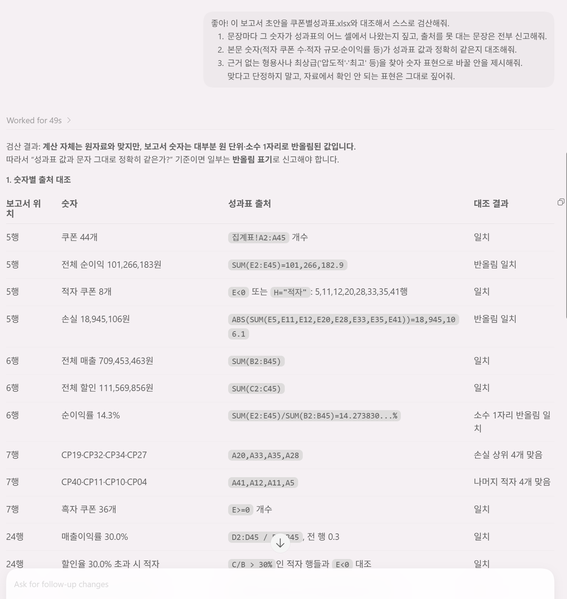

// 실습 4 · 임원용 1페이지 보고서
2 · 보고서 검산¶
1단계에서 첫 세 줄에 결론이 있는 그럴듯한 초안이 나왔습니다. 그런데 이대로 올리면 안 됩니다. AI는 보고서를 참 잘 쓰고, 너무 잘 써서 위험합니다.
그럴듯한 숫자가 원자료와 다를 수 있고, "업계 최고 수준" 같은 자료에 없는 표현이 슬쩍 끼어들기도 합니다. 그래서 검산은 두 갈래로 시킵니다.
- 숫자는 출처로 — 보고서의 모든 숫자를 원자료의 어느 값에서 나왔는지 표로 대조
- 표현은 근거로 — 근거 없는 형용사·단정을 AI 스스로 자수하게
둘 다 통과하지 못한 문장은 뺍니다. 상사가 이 문서로 결정을 내리는 만큼, 보고서는 검산까지가 한 세트입니다.
직접 시켜보세요¶
1단계 초안을 성과표와 놓고 아래 내용을 검증시킵니다.
검증에 포함해볼 것 ✅¶
- 근거 자수 — 문장마다 성과표의 어느 셀에서 나왔는지, 출처 없는 문장 전부 신고
- 숫자 대조 — 본문 숫자가 성과표 값과 정확히 같은지 (적자 쿠폰 수·적자 규모 등)
- 형용사 사냥 — 근거 없는 형용사·최상급을 찾아 숫자 표현으로 바꾸기
- 출처표 — 마지막 블록에 파일·시트·검산 여부가 표로 있는지
이런 건 빼세요 ❌¶
- 그냥 "이 보고서 괜찮아?"라고만 묻기 (문장 품질만 답하기 쉽습니다)
- 숫자 대조 없이 읽기 좋으면 통과시키기
예시 프롬프트¶
여러분 문장을 먼저 보낸 뒤에 열어보세요.
이렇게 물어볼 수 있습니다
report.md 초안을 lab4 폴더의 쿠폰별성과표.xlsx와 대조해서 스스로 검산해줘.
1) 문장마다 그 숫자가 성과표의 어느 셀에서 나왔는지 짚고, 출처를 못 대는 문장은 전부 신고해줘.
2) 본문 숫자(적자 쿠폰 수·적자 규모·순이익률 등)가 성과표 값과 정확히 같은지 대조해줘.
3) 근거 없는 형용사나 최상급('압도적'·'최고' 등)을 찾아 숫자 표현으로 바꿀 안을 제시해줘.
맞다고 단정하지 말고, 자료에서 확인 안 되는 표현은 그대로 짚어줘.실행 예시¶
이렇게 나오면 됩니다

체크포인트¶
- 자료에 없는 표현(지어낸 문장)이 0건이다
- 본문 숫자가 성과표 값과 정확히 일치한다
- 근거 없는 형용사가 숫자 표현으로 바뀌었다
- 마지막에 출처표(파일·시트·검산 완료)가 있다